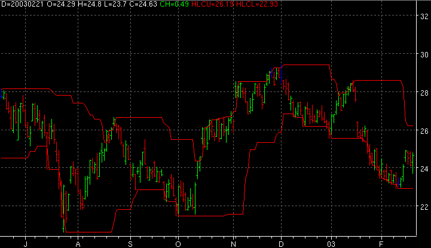

High Low Channel - HLC

Parameters:
- Lower Color - Lower band color
- Lower Line Type - Lower band line type
- Lower Label - The text to identify the lower end band plot
- Upper Color - Upper band color
- Upper Line Type - Upper band line type
- Upper Label - The text to identify the upper end band plot
- Period - The period used
Description:
Alerts:
True